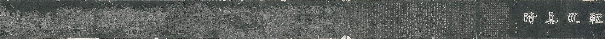

第 1 章
辋川别业的空谷
这所谓“静”，其实是一套精密的视觉控制术。王维一生大半时间在长安担任官职，熟悉朝参的钟鼓与宫廷唱和的节拍，却把一个偏远的山谷写成了中国文学里最彻底的静。这种静不是自然主义式的描摹，而是一套技术：他通过经营辋川别业，把禅宗空观转译为对物象的取舍、距离与光线的控制。空，在他笔下不是万物的消失，而是物与物之间的缝隙。
这样一位身处帝国政治中心的官员，为何反复写“空山”“深林”“返景”？禅进入他的诗，究竟从哪里开始？答案不在他读过的哪部佛经里，而在他如何经营一处山谷。
辋川别业在蓝田县西南，本是王维购得的一处旧业，他又在其中构筑景致，共得二十景。据《辋川集》所序，这二十景有名字：孟城坳、华子冈、文杏馆、斤竹岭、鹿柴、木兰柴、茱萸泮、宫槐陌、临湖亭、南垞、欹湖、柳浪、栾家濑、金屑泉、白石滩、北垞、竹里馆、辛夷坞、漆园、椒园。名字本身便是一次次框定——将流动的山谷切分为可以辨识的单元，有岭，有坞，有亭，有柴，有湖，有滩。
这种切分，本身就是一种取舍。他没有把整个山谷原样搬进诗里。而是择取那些视觉上可以停顿的地点，把它们作为画面，再以五言绝句一首一首写过去。二十景，二十首，诗与地点一一对应。
这种体例在唐代并不稀见，但王维的处理与前人不同。他不写景点全貌，不写季候流转的完整过程，也很少写游赏者的情绪起伏。他多数时候只取一个极小的切片：一束光线，一阵人语，一处水痕，几片落叶。
后来计成在《园冶》里说过一句精要的话：造园者要“将庸常与平凡掩于视线之外，使卓越与辉煌尽收眼底”。这话虽晚至明代，却道出了辋川经营的逻辑。
中国园林的魅力正在于此：它并不在于一眼望尽，而是通过精心布局，引导游赏者在步移景换间慢慢领略其深邃之美。二十景的命名与布局，本质上是把山谷中那些趋于静、趋于空、趋于简的片段收入视线，而把其余部分——杂树、泥路、乱石、日常扰攘——统统隐去。
园林的围墙与路径，在物理上完成了这种隔离；诗歌的短小篇幅，则在语言中再做一次。
两层过滤，留下的是被控制过的物象。这就是王维接受禅的第一步。不是信仰皈依，而是注意力的调整。
他把禅宗所说的“空”看作一种观看方式：不是不看，而是有选择地看，并且让被看的物象处在若有若无之间。右拾遗、监察御史、左补阙——这些职衔把他固定在长安宫禁与衙署之间。他熟悉朝参的钟鼓，熟悉奏章往来的节奏，也熟悉宫廷应制诗那种铺陈富丽、万物皆备于我的语感。他写过“九天阊阖开宫殿，万国衣冠拜冕旒”，那是帝国中心的声音，满目珠翠，满纸光华。
可他一转入辋川，笔下的世界像被抽走了什么。不是抽走了景物，景物还在：山、林、苔、日色、溪水、柴门。但那种“满”的质地不见了。
这种反差，不完全是归隐者通常的姿态。陶渊明写“采菊东篱下，悠然见南山”，人还在篱边、菊旁，田园里有具体的劳作与倦意。王维的辋川却少有这样的身体温度。他写的是一种被精心处理过的空。
一个人长期处在帝国政治中心，为什么反复写“空山”？这不是山林对官场的简单逃避，而是一种技术性的撤离。他把注意力从“满”引向“隙”，从“有”引向“若有若无”。
禅的种子，正是在这种注意力的转移中，落入了士大夫的审美土壤。细读《鹿柴》，这一步会看得更清楚：
空山不见人，但闻人语响。返景入深林，复照青苔上。这是《辋川集》里最著名的一首，短得不能再短。
前两句写听觉。山是空的，不见人。然而空山里忽然传来了人语的回响。这“但闻”二字极妙。人不在眼前，声音却说明了人的存在；可人的存在又被无限推远，成了山林中的一点余音。诗人没有刻意制造寂静，反而用一点“人语响”来衬托寂静。声响起处，山谷反而更深了。
后两句转到视觉。返景，是夕阳反照。夕光落入深林，没有照亮整片林木，只照在青苔上。青苔本是林中最幽暗之物，此刻却成了光线的落脚处。光线来得极慢，走得也极快，只在青苔上停留了一瞬。
这个画面里没有完整的空间，没有清晰的路径，甚至没有稳定的光源。只有一片深林、一束返照、一小片青苔，构成一个极不稳定的视觉焦点。
“空”在哪里？不在“空山”二字上。那两个字只是入口，真正让空发生的，是“返景”与“青苔”之间那个短暂的停顿。光线落入深林，照亮青苔，随即就会暗下去。
空不是万物消失后的虚无，而是物与物之间、光与暗之间不可填满的那道缝隙。这就是王维的办法。山水诗必须立象，禅观却倾向于破象。他没有抛弃物象，而是让物象处在似有若无之间。人语听得到，人却看不见；光看得见，光源却已西沉；青苔在明处，四周却衬着更浓的暗。物象没有消失，但也不再坚实。它成了可以被光线穿透、被声音擦过、被距离拉薄的薄片。这便是一处机锋式的语义反转：空不在物外，而在物的缝隙里。王维笔下的物象，与其说是世界的存在证明，不如说是世界正在退场的痕迹。《鹿柴》如此，《竹里馆》亦然：
独坐幽篁里，弹琴复长啸。深林人不知，明月来相照。人在篁里，弹琴，长啸。琴声与啸声本是个体最直接的自我表达，但在深林中无人听见。只有明月来照。这“来相照”三字，把明月写得像一位访客，静静地来，不作一声。琴声与啸声被深林吸收，人的孤独被月光照亮。物象依旧在：竹、林、琴、月。可每一物都指向一种退隐——深的更深处，静的更静处。还可以再看《木兰柴》：
秋山敛余照，飞鸟逐前侣。彩翠时分明，夕岚无处所。秋山收起了最后的光。飞鸟追逐着前面的同伴，羽色在夕照中时而清晰、时而模糊。夕岚升起来，没有固定的处所。画面里的一切都在动，却动得极慢，慢到接近消散。光影、飞鸟、山岚，彼此追逐，却谁也追不上谁。物象在这里同样是薄片，被风一吹就散。王维的高明，在于他不把禅的“空”写成一个主题，而是把它变成一种节律。诗里的物象出现、逗留、然后退走；诗的语气总是半句落定、半句悬空。这就是“退场的节律”。不是万物皆空，而是万物处在告别的姿态里。《辛夷坞》更把这种退场推到了极致：
木末芙蓉花，山中发红萼。涧户寂无人，纷纷开且落。辛夷花在枝头开放，红色的花萼在空寂的山涧边亮起。没有人看见，它们开了，又纷纷落下。
这二十个字里，没有一句写“空”，却处处是“空”。花开是物的显现，花落是物的消失，显现与消失之间，只有静寂的山涧作为见证。诗人甚至不给出自己的目光，只让花自开自落。立象与破象在同一个瞬间完成：花在，花又不在。这是王维对禅宗“破执”最微妙的诗学回应——不去否定物，也不去肯定物，只是让物在自身的生灭中显出自己的暂住性。
于是我们看见，禅在王维手中开始成为一套审美判断的技术。选择什么入诗，什么不入诗；让什么清晰，什么模糊；把物象推到哪个距离，停留在哪个时刻——这些都不是单纯的诗法，而是一种心性调节的具体操作。
佛经中的“色即是空，空即是色”，在王维这里被转译为：可见之物之所以可见，全赖一束终将消逝的光。看见，就是看见这个消逝本身。
这种技术甚至溢出诗歌，进入了他的绘画。后世记载王维作画不拘常法，始用破墨，擅写山水。
苏轼说他“诗中有画，画中有诗”，其实是看见了这种视觉控制的痕迹。诗与画在这里共享一套原则：取一角，舍全境；取一瞬，舍恒常；取那最容易被忽略的光线和阴影，而把坚实的地貌推向迷蒙。
辋川二十景本身就带有绘画的构图意识。每一景都是一个被框定的视觉单元，像手卷上的一段山水。人沿着山谷行走，视线被路径引导，停在一个个预定的点上，像看一幅幅小画。
这种空间经营，正是“空谷回响”的原型：空谷不是一个抽象概念，而是一个被造出来的空间，人在其中通过对景物的选择性观看，听见内心的回声。
这可以称为“禅骨文心”最初的一次显影：禅理没有浮在文字表面，却成了诗歌骨架下隐而不发的支撑。
文字仍是中国文人熟悉的山水文字，景仍是山、林、泉、石，但组织这些景物的方式变了。禅宗“无相”“破执”的义理没有大段地进入诗行，而是沉入诗行之间的停顿、视线边缘的省略、光与暗交界处的微光。
这是文人转化禅的第一个层次——不是改变说什么，而是改变怎样看，怎样取舍，怎样安排有限的语言和空间。
这里有必要正视一个反方解释。有人会说，王维晚年“退朝之后，焚香独坐，以禅诵为事”，他的诗当然有宗教内涵。他们指出，王维号摩诘，取维摩诘之名，常年与僧众往来，其母崔氏也是笃信佛法。这些都不假。
但细看《辋川集》二十首，几乎找不到佛经术语的痕迹。没有写“净土”，没有写“法身”，没有写“业障”“缘起”“无生”。诗里的“空”不是教义层面的空，而是感官层面的空；它来自对物象的处理，而非对义理的阐述。
这正是“心性技术”与“宗教信仰”之间的差别。信仰要求人接受一套关于世界终极结构的解释，并在其中安放自己的身心。技术则要求人掌握一套可操作的调节方法，用来处理此刻的感知与情绪。
王维所做的是后者。他把禅宗空观从宗教语境中取出，放进山水经营的实践里，使它变成一种构图原则、一种光线控制、一种注意力分配。
《鹿柴》中这束返景，值得再停留片刻。夕阳反照，不是正午的烈日，也不是清晨的微光。正午的光线垂直落下，把万物照得轮廓分明、阴影短促，那是宫廷诗里最常见的光——均匀、充足、没有死角，适合铺陈“九天阊阖”那种满幅的辉煌。清晨的光线带着湿意，能照出露水和山岚的层次，谢灵运写“猿鸣诚知曙，谷幽光未显”，光尚未完全展开，景物正从暗处浮出，那是发现者的光。
王维选的却是夕照，而且是夕照中更特殊的一种——返景。日落之后，光线本应收尽，却因为云层或山势的折射，忽然折回，从西边的天际线重新照进深林。这种光不照亮全境，只擦过某些表面；它没有热度，只有短暂的亮度；它不宣告白昼的到来，而宣告白昼的终结。
返景入深林，不是照亮深林，而是从深林中切出一小片可见的区域。青苔被照亮了，四周的树、石、溪流却沉在更深的暗处。
光在这里不是照明工具，而是选择工具。它选择什么被看见，什么被忽略。这正是王维视觉控制术的核心机制。
空不是没有物，而是物被光选择性地呈现。被看见的青苔证明世界还在，但被黑暗吞没的其余部分证明世界正在退走。看见与看不见之间那道移动的边界，就是空发生的现场。
这种对光线的敏感，在辋川二十景中并非孤例。《木兰柴》写“秋山敛余照”，那个“敛”字是收拢的动作，山把最后的光收起来，像收起一件衣裳。光不再普照，而成为可以被山体收束的东西。《斤竹岭》写“檀栾映空曲”，竹林的翠色映在空寂的山弯里，光线从竹叶间筛过，碎成无数小块，明灭不定。
《临湖亭》写“当轩对尊酒，四面芙蓉开”，亭子四面荷花开放，但王维不写花色如何艳丽，而写“轻舸迎上客，悠悠湖上来”——视线不在花上停留，而是越过花，望向湖心缓缓移近的小船。
近景被虚化，远景成为焦点。这种视觉的调度，让物象始终处于一种即将退后的状态：花在眼前，但视线已移向湖心；湖心的小船还在远处，但终究会靠岸；靠岸之后，酒席将散。
每一个画面都包含着下一个画面的消失。物象不是静止的呈现，而是流动的退场。
这种退场的节律，与王维在长安宫廷诗中的写作形成尖锐对比。不妨取他一首应制诗来看。《奉和圣制从蓬莱向兴庆阁道中留春雨中春望之作应制》开篇便是“渭水自萦秦塞曲，黄山旧绕汉宫斜”，渭水、黄山、秦塞、汉宫，地理与历史交织成宏阔的舞台。接着“銮舆迥出千门柳，阁道回看上苑花”，皇帝的銮驾穿过千门柳色，阁道回转处上苑花开如海。视线是皇帝的视线，景物是帝国的景物。全诗没有一个角落是暗的，没有一物是退场的。万物都被召集到光天化日之下，参与这场盛大的春望。
这是宫廷诗的逻辑：视线即权力，看得见意味着掌控，看不见意味着不存在。应制诗里不能有空隙，因为空隙意味着秩序的松动。王维在这类诗中从不失手，他知道如何用词语填满每一个角落。
但一回到辋川，他用同样的笔，却写出完全相反的景象：空山不见人，深林人不知，涧户寂无人。人从画面中撤出，光从普照变为局部照亮，物从满幅铺陈变为零星显现。
这不是两种风格的选择，而是两种注意力方向的切换。在长安，他注意力的方向是向外、向全、向满；在辋川，他注意力的方向是向内、向少、向隙。
这种切换需要一个物理空间来承载。辋川别业就是这样一个空间。二十景的命名与布局，细看之下，藏着一套从“入”到“深”再到“寂”的序列。孟城坳是入口，华子冈是登高望远的起点，文杏馆是建筑，斤竹岭是山径，鹿柴与木兰柴是围栏与篱落——这些是别业的外围与通道。再往里走，临湖亭、南垞、欹湖、柳浪、栾家濑是水景，水面从开阔的湖收敛为湍急的濑，视线也随之从远望变为近观。再深处，竹里馆、辛夷坞、漆园、椒园是山谷最幽闭的所在。竹里馆在深林中，辛夷坞在涧户边，漆园与椒园则是劳作之地——但王维不写劳作的人，只写花开花落。
这个序列不是随意的。从入口到水景再到幽深处，空间越来越窄，光线越来越暗，人的踪迹越来越少。孟城坳还能看见新家与古渡的交替，到了辛夷坞，只剩下花自开自落。
这是一条精心设计的观看路径。每一步深入，都滤掉一层喧嚣：先滤掉城市的车马，再滤掉田园的劳作，再滤掉游赏者的身影，最后滤掉诗人自己的声音。到了最深处，只剩下物自身在静默中完成自己的生灭。
这种空间经营，正是后世园林设计的先声。中国园林的魅力并不在于一眼望尽，而是通过精心布局，引导游赏者在步移景换间慢慢领略其深邃之美。辋川二十景的序列，无意中模拟了这个过程。它从社会性的空间（入口、亭台）逐步进入自然性的空间（山林、水泽），再进入几乎无人化的空间（深林、空涧）。每一步都在减少物象的密度和人的参与度。
这种空间的层层过滤，与禅宗“观空”的次第有隐约的对应。禅宗讲“破执”，不是一步到位的顿悟（即使南宗讲顿悟，也需有渐修的积累），而是逐步剥落对外相的执着。先破对名相的执着，再破对身体的执着，再破对“我”的执着。辋川二十景的序列，无意中模拟了这个过程。它从社会性的空间（入口、亭台）逐步进入自然性的空间（山林、水泽），再进入几乎无人化的空间（深林、空涧）。每一步都在减少物象的密度和人的参与度。
但这不是宗教的修行次第，而是审美的空间经营。王维没有在竹里馆里打坐参禅，他在那里弹琴长啸；他没有在辛夷坞里观想无常，他看见花开花落便写下来。
宗教的破执指向解脱，审美的破执指向一种特殊的快感——看见物象在消失的边缘闪现时那种微妙的震颤。青苔被夕光照亮的一瞬，辛夷花从枝头坠落的一瞬，人语在空山中回荡的一瞬——这些都不是解脱的经验，而是审美的经验。
禅宗说“色即是空”，是要人看破色的虚妄；王维写“返景入深林”，是要人看见色在变成空的那个临界点上有多美。
这是王维与禅宗之间最深的契合，也是最根本的分歧。契合在于，他确实把“空”变成了可感知的对象。分歧在于，禅宗的空是终点，王维的空是材料。他用空来制造诗意，而不是用诗意来抵达空。这就可以解释为什么《辋川集》二十首中几乎找不到佛经术语。如果他要写宗教诗，大可以像后来许多禅僧那样，把“无生”“真空”“法性”直接嵌进诗句。
但他不。他写的是山、水、光、苔、花、鸟——这些是诗的材料，不是教义的符号。佛经里的“空”需要解释才能理解；辋川诗里的“空”只需要观看就能感受。他把抽象的义理转化为感官可及的画面，把宗教的内在体验转化为审美的外在形式。这一转化，使得禅不再是僧侣的专利，而成为文人可以通过艺术实践触及的东西。
一个士大夫不必出家，不必研读经论，不必修习禅定，只需经营一处园林、写作一组山水诗，就能在某种程度上体验“空”的况味。辋川别业就是这样一个装置：它把禅的空观物质化为二十个景点、二十首诗、一套可重复的观看路径。任何走进这个山谷的人，只要按照路径走过这些景点，就能在感官层面经历一次从“满”到“空”的渐变。这是王维的发明——他把宗教变成了技术。
但技术的边界也正在这里。辋川别业是一个被隔离的空间。它的空依赖于围墙和距离：围墙把杂乱的日常挡在外面，距离把长安的宫阙推远。一旦走出山谷，空就失效了。王维自己深知这一点。他在《酬张少府》中写：“晚年唯好静，万事不关心。自顾无长策，空知返旧林。”这四句里有一个细微的裂痕。
“唯好静”是审美选择，“万事不关心”是生活态度，“自顾无长策”却是政治处境的坦白——他不是不想关心万事，而是没有能力关心万事。
“空知返旧林”的“空”字在这里不再是禅宗的空观，而是世俗意义上的徒然、只能如此。他知道返回山林只是权宜之计，并不能真正解决仕与隐之间的矛盾。
安史之乱中他被俘受伪职，乱后虽免罪，但终身背负政治污点。辋川的山水再静，也洗不掉这个污点；诗中的空再深，也填不平这个裂痕。他在《竹里馆》里弹琴长啸、明月来照，那是审美世界里的圆满；但回到长安的宅邸，他还是要面对朝堂的倾轧和内心的愧疚。两个世界之间没有桥梁。
这正是王维留给他身后文人的一个未完成的命题。他证明了禅可以转化为审美技术，可以在诗与园林中实现空观。但他没有证明这种技术能够支撑一个人的全部生活。辋川是一个例外空间，需要财富（购置别业）、闲暇（半官半隐的时间安排）和特定的文化训练（诗画修养）才能进入。对于大多数士大夫来说，这样的条件并不具备。
更重要的是，即使具备这些条件如王维本人，辋川也只能提供暂时的栖居，而非永久的安顿。他一生都在长安与蓝田之间往返，在官场与山林之间切换。这种切换本身就是一种消耗：每一次从辋川返回长安，空谷的静就碎掉一次；每一次从长安逃回辋川，又需要时间重新进入那种被过滤过的观看状态。
空谷需要维护——不仅是物理上的维护（修葺亭台、疏浚泉石），更是心理上的维护（不断用诗歌重新框定那些景物）。王维写了《辋川集》，又画了《辋川图》，反复用艺术手段加固这个空间的“空”的品质。这种反复加固的行为本身就说明，“空”不是自然而然的状态，而是一种需要持续投入技术才能维持的效果。
这就引出一个更深的问题：如果“空”需要如此精心地经营才能显现，那么它究竟是一种真实的心性状态，还是一种被制造出来的审美幻觉？王维没有回答这个问题。也许他不需要回答——作为一个诗人兼画家，他只要制造出这种效果就够了。
但对于后来者而言，这个问题无法回避。如果禅的转化只停留在审美领域，那么它就永远是生活的点缀而非生活的结构。一个人可以在诗中写“空山不见人”，却不能在衙门里处理公文时保持“空山”的心境；可以在别业中经营“深林人不知”，却不能在朝堂上面对政敌时维持“人不知”的超然。审美技术解决了表达的问题——怎么写空、怎么画空、怎么造一座空的山谷——却没有解决安顿的问题：怎么在纷扰的日常中持续地活出空的状态。
这个未完成的命题悬在辋川的山谷里。夕光每年都会照进深林，青苔每年都会在那一瞬间亮起又暗下。诗已经写好了，景已经造好了，技术已经成熟了。但那个在官场与山林之间奔波的人，依然没有找到一处可以不再奔波的地方。他的空谷是完美的诗境实验，却不是一个可居住的生活方案。这个方案需要另一个人来完成——一个不像王维那样执着于审美纯粹性的人，一个愿意把目光从山谷移向庭院、从诗境移向日常起居的人。这个人将不再问“如何写空”，而是问“如何在空的状态下度过一生”。辋川的返景照亮了青苔，随即暗了下去。至于这束光下一次会照向哪里，会照进何人的日常，辋川没有回答。
这样的“空”，由远及近，由理入感，已经不再是沙门的证悟，而成了士大夫审美生活的一部分。他其实是在问：如果不把禅当成解脱生死的教义，而是当成一种感知世界的训练，会得到什么？辋川二十景和《辋川集》二十首，就是他的回答。这个回答留下了两个重要的后果。一是审美判断力的重构。
王维以前的山水诗，从谢灵运到王勃，大多追求景的繁密与情的直露。王维把“空”引入审美判断，使得“少”成为比“多”更高的标准，使得“隐”成为比“显”更耐人寻味的品质。后世文人画重留白、重意到笔不到，南宗山水追慕王维为始祖，根源就在这里。二是空间意识的转化。辋川别业不是一个野生的山林，而是一个被设计的观看场。
它证明，文人可以通过空间安排来调节自己的注意力，进而调节自己的心绪。这一发现，比诗本身走得更远。它暗示了一种可能：如果空间经营能够在审美领域中实现空观，那么是否也能在日常生活结构中实现空观？但边界也随之而来。王维解决了怎么写，却没有解决怎么活。
辋川别业虽然提供了诗意的栖居，却并未使他真正脱离官场。他一生半官半隐，往来于长安与蓝田之间。朝廷的差遣并未断绝，仕途的起伏也未能停止。
空山深林只存在于诗句与别业之中，一转身，他还是要回到车马喧嚣的京城。辋川是一个被精心维护的例外，而不是一种可持续的日常结构。这正是王维“空谷”实验的限度。他的空谷，是审美领域里一次成功的转化。通过二十景的经营与《辋川集》的写作，他把禅的空观变成了诗的技术，让空在物象的缝隙里显形。这种技术解决了表达的问题，却留下了安顿的问题。
一个人可以在诗中进入空山，却不能在空山中处理一切。仕与隐之间的张力，依然悬在那里。王维的办法，是避开这座城市，再在附近建造一座空谷。空谷可以入诗，可以入画，可以在想象中无限扩展，却无法真正取代长安城里的那些晨钟暮鼓。
于是，禅的转化还需要再往前走一步：从诗境走向生活结构，从审美技术走向日常安排。这个未完成的问题，留在了辋川的山谷里。像夕光进入深林，照了一下青苔，又暗了下去。至于这束光下一次会照向哪里，会照进何人的日常，辋川没有回答。
